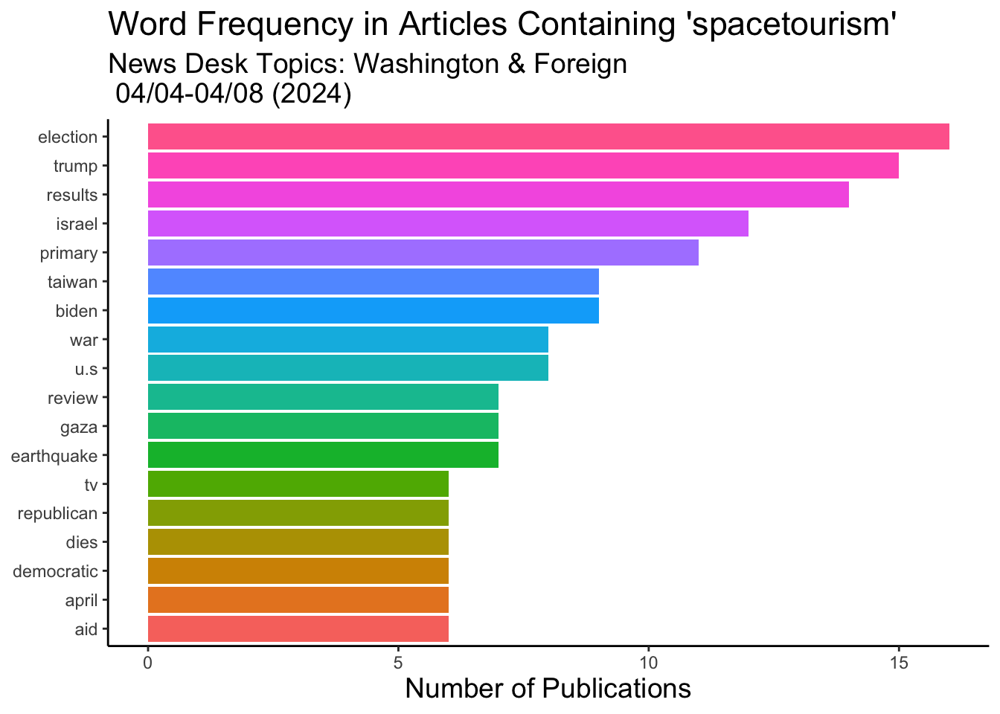

Pick an interesting environmental key word(s) and use the {jsonlite} package to query the API. Pick something high profile enough and over a large enough time frame that your query yields enough articles for an interesting examination.
My Topic: articles on Space tourism published during our class session. (short time period bc a lot of hits) Inspo: space is a part of our greater environment and I assume there are significant impacts in as a result of projects dedicated to space travel (i.e. takes a lot of resources to propel humans in hunks of metal into outer space).
# since the start of this classbegin_date <-"20240401"end_date <-"20240406"baseurl <-URLencode(paste0("http://api.nytimes.com/svc/search/v2/articlesearch.json?=qspacetourism",# term1, "%20", term2,# I played around with the time range and everything "&begin_date=",begin_date,"&end_date=", end_date,"&facet_filter=true","&api-key=", API_KEY))#examine our query urlprint(baseurl)
Let’s make sure we have enough articles in this time period before jumping in!
#run initial queryinitialQuery <-fromJSON(baseurl)# limit the number of articles returned per request# use this for the lab to find how many avaialbe hits are on my query so far to make sure how far to go thru the loop to collect everythingmaxPages <-round((initialQuery$response$meta$hits[1] /10)-1)# since the start of this class, 108 articles have been posted on space tourismmaxPages
[1] 87
87 is a good amount of information to query, let’s load it! It may take a moment, so have some patience.
It’s super interesting the text correlation that the API made between the str spacetourism and the on-going genocide in Palestine. Originally, I was looking for fun articles related to space travel & the impacts of exploration. However, this connection that’s been inadvertently made makes me want to pivot my search to contain articles only from the Washington and Foreign news deck to gauge a general sense of the nyt articles sentiments towards the atrocities that have and are unfolding. Also want to refine search in subsection_names to only politics and the Middle East.
#pages#bind the pages and create a tibble from nytDatnyt_df <-bind_rows(pages)#unique(nyt_df$headline.main)#str(nyt_df)head(nyt_df$response.docs.headline.main)
[1] "Met Opera Taps German Conductor as Next Chorus Director"
[2] "Outrage Over Slain Aid Workers Deepens Democratic Resistance to Arming Israel"
[3] "Baltimore Opens Temporary Shipping Route Around Key Bridge Wreckage"
[4] "Hospitals Must Get Written Patient Consent for Pelvic Exams, H.H.S. Says"
[5] "Future and Metro Boomin’s First Joint Album Opens Big at No. 1"
[6] "Back-to-Back Israeli Strikes Show Tragic Gaps in Choosing Targets"
Recreate the publications per day and word frequency plots using the lead paragraph field. This time filter on the response.docs.news_desk variable to winnow out irrelevant results.
Make some (at least 3) transformations to the corpus including: add context-specific stopword(s), stem a key term and its variants, remove numbers)
# corpus corpus <-tibble(text = nyt_df$response.docs.snippet[6]) # Stem a key term and its variants# In my corpus, how often does Gaza appear?corpus %>%mutate(stem =wordStem("^Gaza")) %>%count(stem, sort =TRUE)
# A tibble: 1 × 2
stem n
<chr> <int>
1 ^Gaza 1
#split into substringsstr_split(corpus,',')
[[1]]
[1] "In an airstrike on Monday in Damascus"
[2] " Israel’s military displayed pinpoint precision. Hours later in Gaza"
[3] " that same military killed seven aid workers."
#swap stringsstr_replace(corpus,'pinpoint precision',"thoughtless, unethical practices that endangered the lives of innocent people")
[1] "In an airstrike on Monday in Damascus, Israel’s military displayed thoughtless, unethical practices that endangered the lives of innocent people. Hours later in Gaza, that same military killed seven aid workers."
stop_the_complacency <-c("displayed",'pinpoint', 'precision',"Hours", "later")# Remove custom stop words from the corpus & replace with spacecorpus %>%mutate(text =str_replace_all(text, paste(stop_the_complacency, collapse ="|"), ""))
# A tibble: 1 × 1
text
<chr>
1 In an airstrike on Monday in Damascus, Israel’s military . in Gaza, that …
Word Frequency Plot
nytDat <- nyt_df#load stop wordsdata(stop_words)#stop_words#use tidytext::unnest_tokens to put in tidy form. #If there are some types of news that we'd like to exclude, we can filter()tokenized <- nytDat %>%filter(response.docs.news_desk !=c("Washington","Foreign")) %>%filter(response.docs.subsection_name !=c("Politics","Middle East")) %>%unnest_tokens(word, response.docs.lead_paragraph) #word is the new column, paragraph is the source# stop word anti_jointokenized <- tokenized %>%anti_join(stop_words)#remove all numbersclean_tokens <-str_remove_all(tokenized$word, "[:digit:]") #remove s contractionsclean_tokens <-gsub("’s", '', clean_tokens)tokenized$clean <- clean_tokens#remove the empty stringstib <-subset(tokenized, clean!="")#reassigntokenized <- tib# this is commented out for rendering because it displays all of the tokenized words#tokenized[,"word"]# let's visualize thesetokenized %>%count(word, sort =TRUE) %>%filter(n >10) %>%mutate(word =reorder(word, n)) %>%ggplot(aes(n, word)) +geom_col(aes(fill = word)) +labs(y =NULL,title ="Word Frequency in Articles Containing 'spacetourism'",subtitle ="News Desk Topics: Washington & Foreign \n 04/04-04/08 (2024)",x ="Number of Publications", ) +theme_classic() +theme(title =element_text(size =14,hjust =0.5),legend.position ="none" )
Recreate the publications per day and word frequency plots using the headlines variable (response.docs.headline.main). Compare the distributions of word frequencies between the first paragraph and headlines. Do you see any difference?
Comparing the distribution of word frequencies between the first paragraph and headlines plots, there are a lot of similarities in words. Where they differ most is in their tone. The headlines have more charged language. However, the headlines contain more topic related content, whereas the first paragraph contained a bigger blend of art and American politics. I suspect the art articles likely relates peaceful protest art in response to the genocide in Palestine. However, it is very likely it is also about a super cool art exhibit on spacetourism.
#use tidytext::unnest_tokens to put in tidy form. #If there are some types of news that we'd like to exclude, we can filter()tokenized <- nytDat %>%filter(response.docs.news_desk !=c("Washington","Foreign")) %>%filter(response.docs.subsection_name !=c("Politics","Middle East")) %>%unnest_tokens(word, response.docs.headline.main) #word is the new column, paragraph is the source# this is commented out for rendering because it displays all of the tokenized words#tokenized[,"word"]
Word Frequency Plot
# load stop wordsdata(stop_words)#stop_words# stop word anti_jointokenized <- tokenized %>%anti_join(stop_words)# inspect the list of tokens (words)#tokenized$word# remove all numbersclean_tokens <-str_remove_all(tokenized$word, "[:digit:]") # remove s contractionsclean_tokens <-gsub("’s", '', clean_tokens)tokenized$clean <- clean_tokens# remove the empty stringstib <-subset(tokenized, clean!="")# reassigntokenized <- tib# visualizetokenized %>%count(clean, sort =TRUE) %>%filter(n >5) %>%mutate(clean =reorder(clean, n)) %>%ggplot(aes(n, clean)) +geom_col(aes(fill = clean)) +labs(y =NULL,title ="Word Frequency in Articles Containing 'spacetourism'",subtitle ="News Desk Topics: Washington & Foreign \n 04/04-04/08 (2024)",x ="Number of Publications", ) +theme_classic() +theme(title =element_text(size =14,hjust =0.5),legend.position ="none" )

Publications per day
tokenized %>%mutate(response.docs.pub_day=gsub("T.*","", response.docs.pub_date)) %>%group_by(response.docs.pub_day) %>%summarise(count=n()) %>%ggplot() +geom_bar(aes(x=fct_reorder(response.docs.pub_day, count), y=count, fill = response.docs.pub_day), stat="identity") +scale_fill_manual(values = FreePalestine) +labs(title ="Publications Per Day Containing Spacetourism",subtitle ="News Desk Topics: Washington & Foreign, 04/04-04/08 (2024)",y ="Number of Publications",x =' ') +theme_classic() +theme(title =element_text(size =14,hjust =0.5),legend.position ="none" ) +coord_flip()